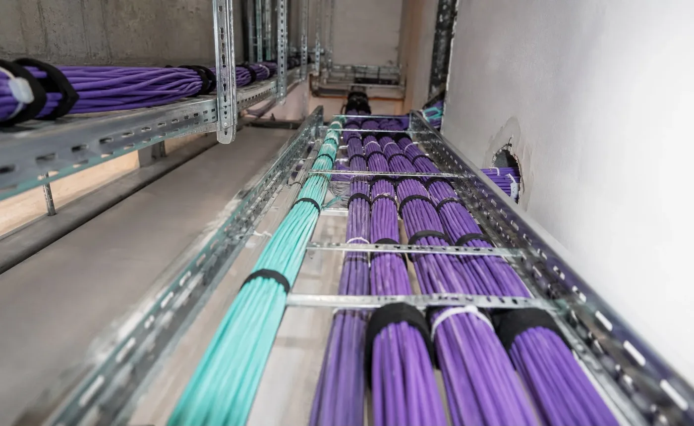
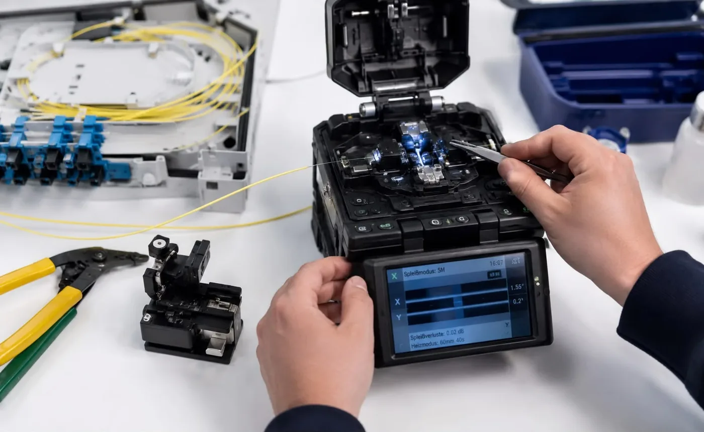
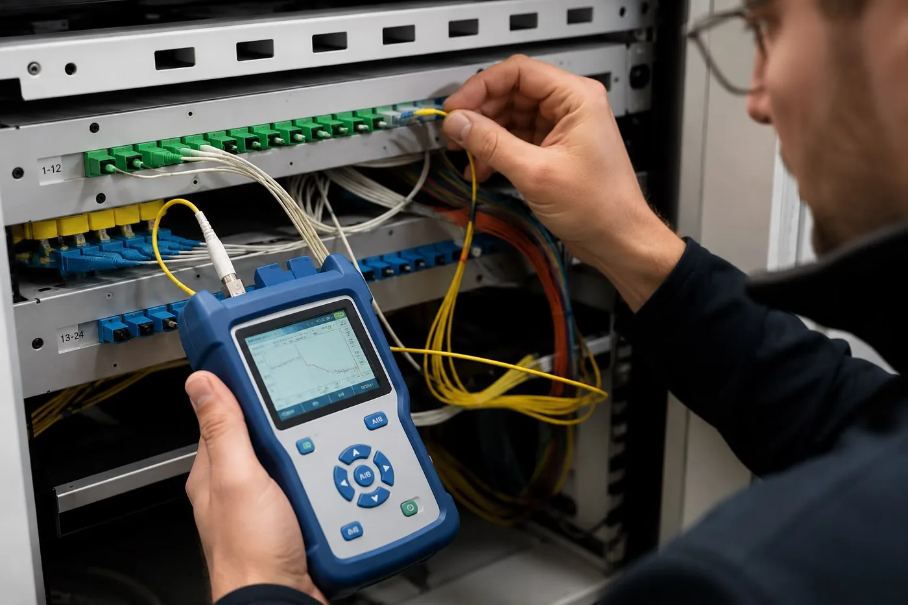

Langsames Netzwerk, ständige Abbrüche, veraltete Verkabelung? Wir bauen die Infrastruktur, auf die Sie sich verlassen können: LWL-Verlegung, Spleißtechnik und Messung — normgerecht, dokumentiert und bereit für die nächsten 20 Jahre.
Unsere Leistungen
Ihr Netzwerk soll einfach funktionieren — heute und wenn Ihr Bedarf wächst. Von der Planung bis zur Übergabe verlegen, spleißen und messen wir Ihr LWL-Netz. Sie erhalten eine Infrastruktur mit Messprotokoll und vollständiger Dokumentation, auf die jeder Techniker später aufbauen kann.
Verlegung
Immer mehr Geräte, immer größere Datenmengen — und die alte Verkabelung kommt nicht mehr mit? Wir verlegen Glasfaserkabel fachgerecht in Gebäuden, Leerrohren und Kabeltrassen, innen wie außen. Ihr Vorteil: eine strukturierte Verkabelung, die heute stabil läuft und sich morgen ohne Umbau erweitern lässt.


Spleißtechnik
Beim Spleißen werden einzelne Glasfasern dauerhaft und nahezu verlustfrei miteinander verbunden — mit modernsten Lichtbogenspleißgeräten und größter Sorgfalt für jede einzelne Faser.
Patchung
Wir konfektionieren Stecker, beschalten Patchpanels und richten Ihre strukturierte Verkabelung normgerecht ein — für eine aufgeräumte, übersichtliche und wartungsfreundliche Infrastruktur.

Messung & Dokumentation
Woher wissen Sie, dass Ihre neue Verkabelung wirklich hält, was sie verspricht? Ganz einfach: Wir messen jede Strecke mit professionellen Geräten und übergeben Ihnen normgerechte Protokolle samt Plänen — Ihr schwarz auf weiß dokumentierter Qualitätsnachweis und die Grundlage für jede spätere Erweiterung.
Unser Ablauf
Trassierung, Kabelplan und Materialberechnung
Fachgerechte Kabelverlegung im Gebäude
Verbindung der Fasern mit Lichtbogenspleißgerät
OTDR-Messung, Protokoll und Dokumentation
Beschreiben Sie uns kurz Ihr Objekt — Sie erhalten innerhalb von 24 Stunden eine ehrliche Einschätzung und ein konkretes Angebot. Kostenlos und unverbindlich, von der Wohnung bis zum Bürogebäude.
Jetzt Beratung anfragenLieber persönlich? 📞 +43 676 6520263
Glasfaser überträgt Daten per Licht statt Kupferkabel — dadurch ist sie schneller, stabiler und störungsunempfindlicher. Ideal für Homeoffice, Streaming und Unternehmen.
Die Kosten hängen von der Länge der Strecke und dem Aufwand ab. Wir erstellen Ihnen ein kostenloses, unverbindliches Angebot nach einer kurzen Besichtigung.
Ja. Wir montieren die Starlink-Schüssel fachgerecht, verlegen Kabel und richten alles ein — damit Sie sofort online sind. Alle Details finden Sie auf unserer Seite SAT-Technik & Starlink.
Ja. Neben Glasfaser verlegen wir auch klassische Netzwerkverkabelung (Cat 6/7) — sauber, unsichtbar und mit beschrifteten Dosen. Für WLAN-Optimierung und Router-Einrichtung sehen Sie sich auch unsere Computer- & IT-Hilfe an.
Kleine Installationen (z.B. innerhalb eines Büros) dauern einen halben bis ganzen Tag. Größere Strecken werden individuell geplant — wir informieren Sie vorab über den genauen Zeitaufwand.
Ja, besonders wenn Sie viel streamen, im Homeoffice arbeiten oder mehrere Geräte gleichzeitig nutzen. Glasfaser sorgt für eine stabile und schnelle Verbindung in der ganzen Wohnung.
Kostenlos & unverbindlich
Beschreiben Sie kurz Ihr Objekt — Sie erhalten innerhalb von 24 Stunden eine Einschätzung und ein konkretes Angebot.